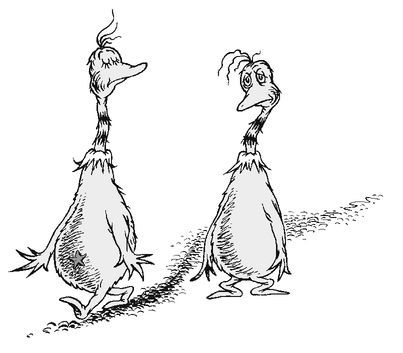

4
THIS IS NOT OPINION, THIS IS BIOLOGY
Now, the Star-Belly Sneetches had bellies with stars.
The Plain-Belly Sneetches had none upon thars.
Those stars weren’t so big. They were really so small.
You might think such a thing wouldn’t matter at all.

Then, quickly, Sylvester McMonkey McBean
Put together a very peculiar machine.
And he said, “You want stars like a Star-Belly Sneetch?
My friends, you can have them for three dollars each!”
In his 1961 story about the Sneetches, Dr. Seuss introduced us to two groups of Sneetches, one with stars on their bellies and the other with none. The ones without stars wanted desperately to get stars so they could feel like they fit in. They were willing to go to extreme lengths and pay larger and larger sums of money simply to feel like they were part of a group. But only Sylvester McMonkey McBean, the man whose machine puts “stars upon thars,” profited from the Sneetches’ desire to fit in.
As with so many things, Dr. Seuss explained it best. The Sneetches perfectly capture a very basic human need—the need to belong. Our need to belong is not rational, but it is a constant that exists across all people in all cultures. It is a feeling we get when those around us share our values and beliefs. When we feel like we belong we feel connected and we feel safe. As humans we crave the feeling and we seek it out.
Sometimes our feeling of belonging is incidental. We’re not friends with everyone from our hometown, but travel across the state, and you may meet someone from your hometown and you instantly have a connection with them. We’re not friends with everyone from our home state, but travel across the country, and you’ll feel a special bond with someone you meet who is from your home state. Go abroad and you’ll form instant bonds with other Americans you meet. I remember a trip I took to Australia. One day I was on a bus and heard an American accent. I turned and struck up a conversation. I immediately felt connected to them, we could speak the same language, understand the same slang. As a stranger in a strange city, for that brief moment, I felt like I belonged, and because of it, I trusted those strangers on the bus more than any other passengers. In fact, we spent time together later. No matter where we go, we trust those with whom we are able to perceive common values or beliefs.
Our desire to feel like we belong is so powerful that we will go to great lengths, do irrational things and often spend money to get that feeling. Like the Sneetches, we want to be around people and organizations who are like us and share our beliefs. When companies talk about WHAT they do and how advanced their products are, they may have appeal, but they do not necessarily represent something to which we want to belong. But when a company clearly communicates their WHY, what they believe, and we believe what they believe, then we will sometimes go to extraordinary lengths to include those products or brands in our lives. This is not because they are better, but because they become markers or symbols of the values and beliefs we hold dear. Those products and brands make us feel like we belong and we feel a kinship with others who buy the same things. Fan clubs, started by customers, are often formed without any help from the company itself. These people form communities, in person or online, not just to share their love of a product with others, but to be in the company of people like them. Their decisions have nothing to do with the company or its products; they have everything to do with the individuals themselves.
Our natural need to belong also makes us good at spotting things that don’t belong. It’s a sense we get. A feeling. Something deep inside us, something we can’t put into words, allows us to feel how some things just fit and some things just don’t. Dell selling mp3 players just doesn’t feel right because Dell defines itself as a computer company, so the only things that belong are computers. Apple defines itself as a company on a mission and so anything they do that fits that definition feels like it belongs. In 2004, they produced a promotional iPod in partnership with the iconoclastic Irish rock band U2. That makes sense. They would never have produced a promotional iPod with Celine Dion, even though she’s sold vastly more records than U2 and may have a bigger audience. U2 and Apple belong together because they share the same values and beliefs. They both push boundaries. It would not have made sense if Apple released a special iPod with Celine Dion. As big as her audience may be, the partnership just doesn’t align.
Look no farther than Apple’s TV commercials “I’m a Mac and I’m a PC” for a perfect representation of who a Mac user needs to be to feel like they belong. In the commercial, the Mac user is a young guy, always in jeans and a T-shirt, always relaxed and always having a sense of humor poking fun at “the system.” The PC, as defined by Apple, is in a suit. Older. Stodgy. To fit in with Mac, you have to be like Mac. Microsoft responded to Apple with its own “I’m a PC” campaign, which depicts people from all walks of life identifying themselves as “PC.” Microsoft included many more people in their ads—teachers, scientists, musicians and children. As one would expect from the company that supplies 95 percent of the computer operating systems, to belong to that crowd, you have to be everyone else. One is not better or worse; it depends on where you feel like you belong. Are you a rabble-rouser or are you with the majority?
We are drawn to leaders and organizations that are good at communicating what they believe. Their ability to make us feel like we belong, to make us feel special, safe and not alone is part of what gives them the ability to inspire us. Those whom we consider great leaders all have an ability to draw us close and to command our loyalty. And we feel a strong bond with those who are also drawn to the same leaders and organizations. Apple users feel a bond with each other. Harley riders are bonded to each other. Anyone who was drawn to hear Dr. Martin Luther King Jr. give his “I Have a Dream” speech, regardless of race, religion or sex, stood together in that crowd as brothers and sisters, bonded by their shared values and beliefs. They knew they belonged together because they could feel it in their gut.